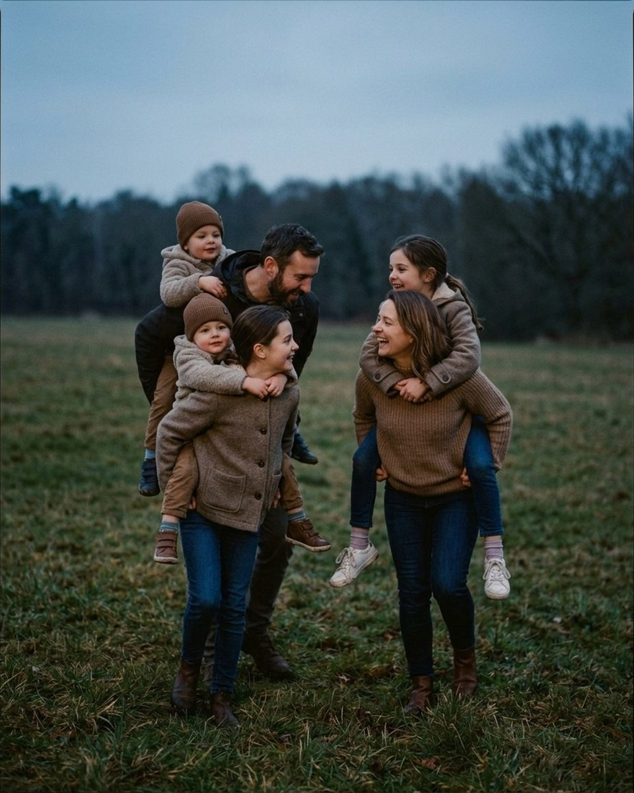

What to say to a dad who hates having his photo taken
Twenty-three lines for the one person at the session who did not want to be there, in the order a family session actually runs.
Most family sessions have one person in them who did not book it. He agreed to it, he put on the shirt he was told to put on, and he is standing at the edge of the frame doing arithmetic about how long this will take. He is not hostile. He is self-conscious, which looks almost identical from behind a camera and needs the opposite treatment. Telling him to loosen up confirms the thing he already suspects, which is that he is doing this wrong and everyone can see it. What works is quieter: lower the stakes out loud, give him something to do with his hands, and let him look at his kids instead of your lens for the first ten minutes. Every prompt below is quoted word for word from the Prompted catalog, with the pose it belongs to and the moment in the session to use it. They are ordered the way a session runs, from the first thing you say in the driveway to the one frame of just him that his family will actually print. Four of the reference frames here are AI-generated posing references and are labelled as such; the maternity frame is a photograph. Real galleries are being added through the contributor program as photographers submit their own work.

Say the first thing before he is in front of the camera
The reluctant dad has usually decided how this hour will go before you have taken a light reading. He expects to be arranged, corrected, and shown a screen with his own face on it. Everything you say in the first two minutes is really answering one unasked question: what happens if I look stupid. Answer it plainly, early, and without making a joke of him, and you get a different man for the rest of the session. These four lines all do the same job, which is removing the audience.
You can't mess this up. There are no outtakes, only extras.
Nervous clientFrom the pose “Jacket drape”
Use it while you are still walking to the spot, before anyone has been posed. It reframes the whole hour as something with no failing grade, which is the specific fear most reluctant dads arrived with.
Nobody sees these until you've approved them. Deal?
Nervous clientFrom the pose “Chin on hand”
Say it the first time he mentions hating photos of himself, and mean it. The word deal invites an answer, so you get him talking instead of bracing, and you have made a promise you can keep.
My job is deleting the bad ones. You'll never see them.
Nervous clientFrom the pose “Crossed arms grin”
Good for the dad who asks to see the back of the camera after the first frame. It gives him a reason to stop checking, because the checking is already covered by someone else.
We'll get one photo where everyone smiles at me for Grandma. Then we play. Deal?
Nervous clientFrom the pose “Walk away holding hands”
Open with this when the session was clearly booked by someone other than him. Naming the one obligatory frame, and putting a limit on it, turns the rest of the hour into something he is not enduring.
None of these are jokes at his expense, which matters more than it sounds. The same principle runs through what to say when a couple goes stiff: name the awkwardness as a normal thing that happens to everyone, then move on quickly enough that nobody has to sit in it.
Give him a job, not a pose

A pose asks him to hold a shape and look like he means it. A job asks him to do something, and the shape happens on its way. Dads who hate photographs are almost always fine being photographed while carrying, lifting, catching or holding somebody, because the task takes the camera out of the centre of his attention. Physical jobs are best, and weight is better than motion: a child on his shoulders changes his posture more honestly than any instruction about shoulders could.
There's no wrong way to hold your kid. They'll show you where they fit.
Nervous clientFrom the pose “Toddler toss”
Say it the moment you hand him a child and see him hesitate about grip. It hands the decision to the kid, so he is no longer performing a hold for you, he is just holding his own child.
Parents, you're just furniture right now. Comfortable, loving furniture.
Nervous clientFrom the pose “Piggyback parade”
Use it for a pose built around the kids, when the adults only have to be stable. Being told he is scenery is a relief to a man who thought he was the subject.
You handle the hugging. I'll handle the timing.
Nervous clientFrom the pose “Race to camera”
Good just before a moving frame, when he is likely to glance at you for a cue. It splits the work in two and gives him the half that does not involve watching your hands.
Let the kids get heavy in your arms. Heavy is the picture.
CalmFrom the pose “Everyone look at baby”
For the second half of a session, once arms are genuinely tired. It turns the fatigue he is trying to hide into the thing you are asking for, and the slump it produces reads as tenderness.
Let him look at anyone but the lens

Eye contact with a lens is the hardest thing you will ask him to do, and it is the part he is dreading. It is also the least necessary: a family photograph where everyone is looking at each other is usually the one that gets framed, and the one where everyone stares down the barrel is the one that gets sent to relatives. Spend the first stretch of the session giving him somewhere else to look, and save the camera-facing frame for the end, after he has stopped being aware of you.
Nobody has to look at the camera. Look at whoever you love most in this group.
Nervous clientFrom the pose “Group walk hold hands”
A good opening direction for a whole family at once, so he is not singled out. It also solves the problem of five people staring at you with five different expressions.
Mom, Dad — look at each other. The kids will do the rest, I promise.
Nervous clientFrom the pose “Group squeeze”
Use it when the parents are stiff and the children are already loose. Turning the two adults inward gives him one familiar face to deal with instead of a lens, and the kids react to being ignored.
You don't need to look at the camera at all. Just keep your eyes locked on that sweet face.
Nervous clientFrom the pose “Mantel overhead lift”
For any frame where he is holding the youngest. It is permission and instruction in one sentence, and it produces the downward gaze that makes a lift read as affection rather than a stunt.
Look at their ear. I know it sounds strange. Trust me.
Nervous clientFrom the pose “Arm swing stroll”
Save this for a close frame with his partner, where looking into her eyes on command feels theatrical to him. An ear is a specific, unembarrassing target, and from your angle it looks like eye contact.
The laugh he cannot pose

A held smile is the failure mode of every reluctant dad. He can keep one up for about four seconds, and it reads exactly as what it is. The fix is not to ask for a better smile but to make something happen that he has to respond to, ideally something involving his children and a small amount of indignity. Give the instruction to the kids when you can. He is far more likely to go along with a thing his children are already doing than with a thing you asked him for directly.
Everyone jump on three — Dad, you especially.
PlayfulFrom the pose “Shoulder ride”
Use it once the group is warm and you want something with air in it. Naming him last is the whole trick: he is included by the group instruction, then singled out in a way that is clearly friendly.
Kids, bury Dad's feet. Dad, act like you haven't noticed.
PlayfulFrom the pose “Piggyback parade”
For sand, leaves or long grass, mid-session. He has been given a part to play rather than a face to make, and playing along with his own kids is something he already knows how to do.
Whoever laughs first has to do the dishes tonight.
PlayfulFrom the pose “Couch pile”
Good indoors on a family that is competitive with each other. The stakes are small enough to be funny and real enough to be taken seriously, and somebody always breaks within ten seconds.
Thumb war tournament. I'll photograph the drama.
PlayfulFrom the pose “Group squeeze”
A reset for the middle of a session that has gone quiet. It puts his hands and a child's hands together, occupies both faces completely, and takes about twenty seconds to run.
When he is the partner and not the dad yet

The reluctant man at a maternity or engagement session has a harder version of the same problem: the session is explicitly about somebody else, he has been told he is there to support her, and he has no idea what that looks like standing up. Give him a physical position relative to her and then take the attention off his face entirely. Most of these prompts are written to be said to the pair, not to him, which is usually the right way to direct a man who does not want to be directed.
Step right in behind her and rest your hands on the baby. I'll take care of everything else.
Nervous clientFrom the pose “Bluff bump wrap”
Say it as your first direction to him, before he has invented a stance of his own. It gives him a place to stand, a job for both hands, and an explicit promise that the rest is not his problem.
You don't need to look at me at all. Just lock eyes with each other.
Nervous clientFrom the pose “Shoreline blanket drape”
For the close frames where he keeps checking your position. The instruction is mutual, so he is following her rather than performing for you.
It's okay to feel silly. Silly photographs beautifully.
Nervous clientFrom the pose “Walking hand in hand”
Use it the moment you see him smirk at himself mid-pose. Saying the quiet part out loud usually ends it, and the sentence is short enough to call across a distance without making a speech of it.
Forget I'm here for a second. Tell them about the first time you met.
Nervous clientFrom the pose “Piggyback”
A reliable last resort for a couple that will not stop posing. He gets a story to tell, which is a job with a beginning and an end, and you shoot the part where she reacts to it.
What he is actually worried about
Ask a dad why he hates photographs of himself and you will usually get a specific answer, not a general one: his weight, his hairline, the way he looks when he smiles with his mouth closed. He has an image in his head from some frame he was shown ten years ago. You cannot argue him out of it, and trying to compliment him out of it makes it worse, because it confirms that his appearance is under discussion. What works is treating the thing he is worried about as beneath comment and getting on with the session.
You don't need to fix his collar. I promise it reads as charming.
Nervous clientFrom the pose “Couch pile”
Say it to the partner who keeps reaching over to straighten him. Stopping the fussing is worth more to him than the collar was, and it means the correction came from you rather than from her.
Messy hair stays in. It's proof you all actually live together.
Nervous clientFrom the pose “Sandwich hug”
For the family that arrived immaculate and is coming apart by the twenty-minute mark. It makes the dishevelment intentional, which lets him stop monitoring it.
Fix your hair if you want. Honestly, the pause looks great too.
Nervous clientFrom the pose “Letterman lean”
Use it for a solo frame of him, where the self-consciousness has nowhere to hide. Offering the fix and then removing the reason for it gives him a way out that is not an argument about how he looks.
The last frame, and the one he will keep
Take the picture of just him at the end, never at the start. By then he has spent forty minutes discovering that nothing bad happened, and his face has stopped guarding itself; the same portrait attempted in the first ten minutes would have been a held smile and a braced jaw. Keep it short, two or three frames, and put a child in his arms if one is available, because he will always rather be photographed holding someone than standing alone. Then tell him you have it and stop shooting, which is its own kind of respect and the thing he is most likely to remember about working with you. The order matters more than any single line above: low stakes first, a job second, eye contact last. It is the same sequencing that runs through directing kids without bribing them and what to say to get natural smiles at a family session, and it is the reason the reluctant dad usually turns out to be the easiest person in the group by the end, as long as nobody told him to relax.
The Fall Mini Session Shot List
About 25 poses grouped by family size, each with the words to say. A free PDF, sent once you confirm your address.
One email to confirm, one with the PDF. Unsubscribe any time. No selling, no sharing.
Every prompt in this guide is in the app, with the pose it belongs to.
Prompted is the posing app that is only a posing app: 250+ poses, each with word-for-word prompts in four tones, filtered to the light you're standing in. The sun tracker is free forever.
Get Prompted on the App Store